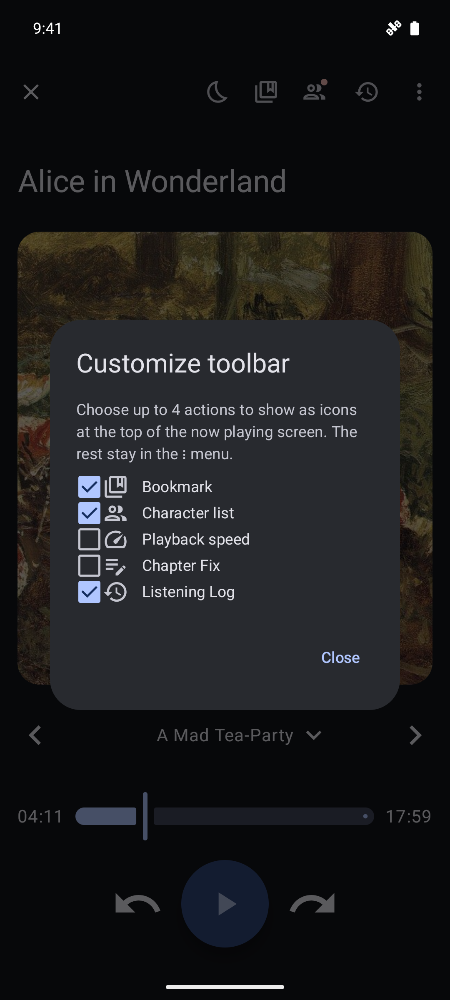
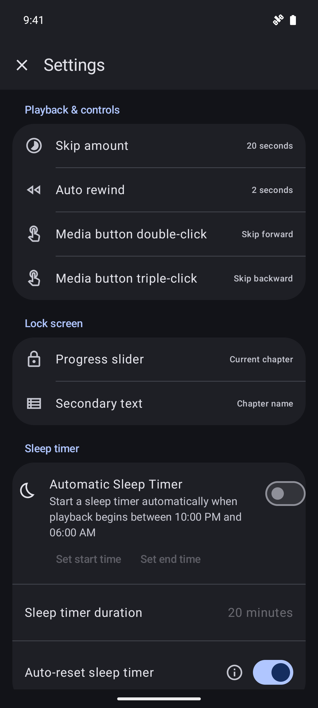
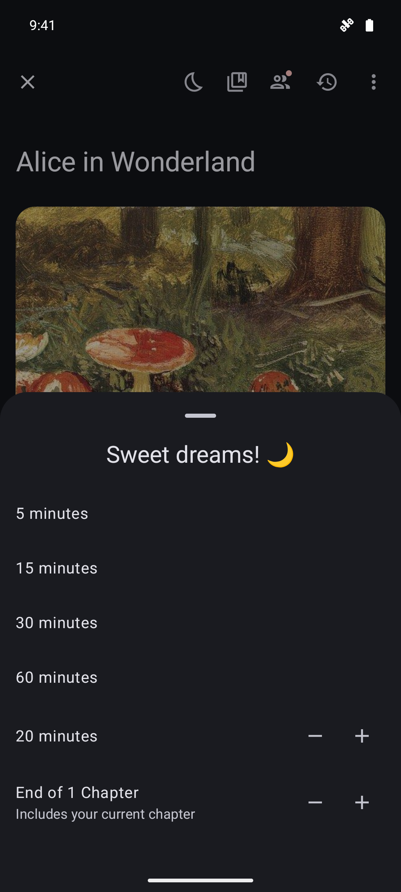

VoicePlus / v1.28 / screenshot preview
Your books. Your listening.
Real app captures in dark mode, with a fictional demo library. The frames below are presentation-only; open any screen to view the untouched PNG.
Make it yours
Choose your playback shortcuts, media-button actions and sleep-timer behaviour.

Your playback shortcutsKeep your favourite actions within reach.

Your controlsSet media-button actions and lock-screen options.

Sleep timerWind down at your own pace.
Tablet previews
Captured at tablet display sizes—not resized phone images.